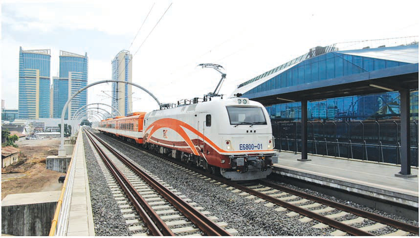

Figure 13: Tanzania Standard Gauge Railway
In summary, Tanzania’s rich natural resources provide a solid foundation for developing various economic sectors and enhancing the lives of its people. Better management and strategic investment in these resources are essential for achieving sustainable economic growth in the country.